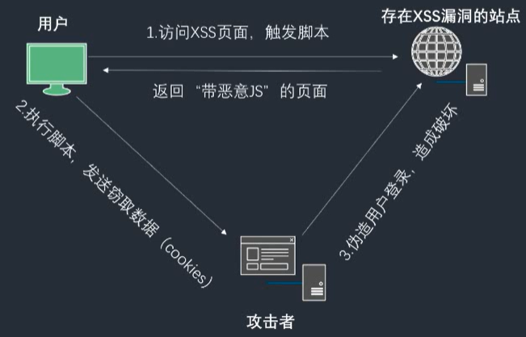
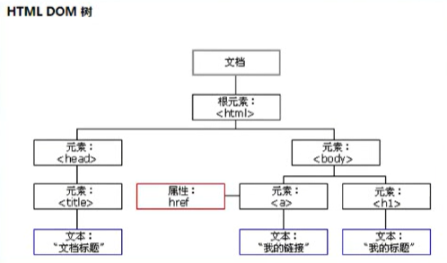
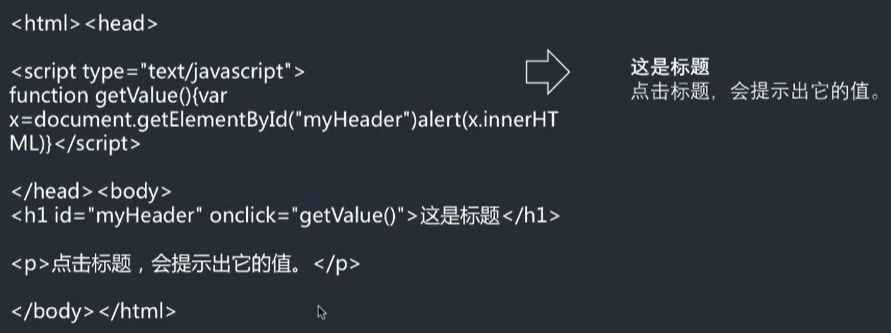
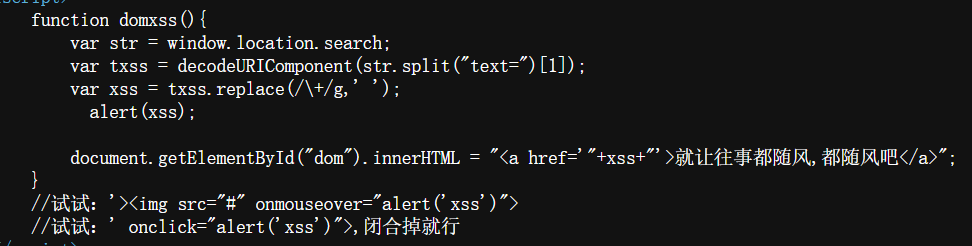

跨站脚本漏洞（XSS）
发生在web前端
可以用来进行钓鱼攻击、钓鱼攻击、前端js挖矿、用户cookie获取。甚至可以结合浏览器自身的漏洞对用户主机进行远程控制等

- 常见类型：
- 反射型
交互的数据一般不会被存在数据库里面，一次性，所见即所得，一般出现在查询类页面等。
- 存储型
交互的数据会被存在数据库里面，永久性存储，一般出现在留言板，注册等页面。
- DOM型
不与后台服务器产生数据交互，是一种通过DOM操作前端代码输出的时候产生的问题，一次性也属于反射型。
- 漏洞原因：
程序对输入和输出的控制不够严格，导致“精心构造”的脚本输入后，在输到前端时被浏览器当作有效代码解析执行从而产生危害。
- 测试流程：
- 在目标站点上找到输入点，比如查询接口,留言板等
- 输入一组”特殊字符+唯一识别字符”，提交，查看返回的源码，是否有做对应的处理;
- 通过搜索定位到唯一字符，结合唯一字符前后语法确认是否可以构造执行js的条件(构造闭合)
- 提交构造的脚本代码(以及各种绕过姿势)，看是否可以成功执行，
如果成功执行则说明存在XSS漏洞;
tips：
- 一般查询接口容易出现反射型XSS，留言板容易出现存储型XSS 2. 由于后台可能存在过滤措施，构造的script可能会被过滤掉，而无法生效,或者环境限制了执行(浏览器) 3. 通过变化不同的script，尝试绕过后台过滤机制;
反射型XSS
在网页源代码加入正确格式后可被直接输出
GET方式的XSS漏洞更加容易被利用，一般利用的方式是将带有跨站脚本的URL伪装后发送给目标
而POST方式由于是以表单方式提交，无法直接使用URL方式进行攻击
GET：以url方式提交数据;
POST：以表单方式在请求体里面提交
存储型XSS
点击、刷新页面都会执行
DOM型XSS
- DOM：
一个个访问HTML的标准编程接口

通过JavaScript，可以重构整个HTML文档[添加、移除、改变或重排页面上的项目]
要改变页面的某个东西，JavaScript就需要获得对HTML 文档中所有元素进行访问的入口。
这个入口，连同对HTML 元素进行添加、移动、改变或移除的方法和属性，都是通过文档对象模型来获得的(DOM)。


从浏览器地址栏的 URL 中获取参数，未经严格过滤直接显示在网页上，从而让攻击者可以注入恶意脚本。
1. 获取 URL 参数
var str = window.location.search;- 含义：获取当前页面 URL 中
?后面的部分。 - 例子：如果网址是
http://127.0.0.1/dom.php?text=abc，那么str的值就是?text=abc。
2. 提取Payload
var txss = decodeURIComponent(str.split("text=")[1]);str.split("text=")：把字符串按text=切开。 结果类似于数组：["?","abc"]。[1]：取出切开后的第二部分（也就是=后面的值）。decodeURIComponent(...)：把浏览器自动编码的特殊字符（如%20空格）还原回来。
3. 简单的“伪净化”
var xss = txss.replace(/\+/g, ' ');- 含义：把字符串里的
+号替换成空格。 - 注意：这行代码非常鸡肋。它只处理了加号，但没有处理
<、>、"、'等真正危险的 HTML 标签符号。这就好比为了防止下雨，只戴了墨镜，却没穿雨衣。
4. 触发弹窗（展示漏洞利用）
alert(xss);- 含义：弹出一个警告框，显示用户输入的内容。这是为了让你直观看到“代码执行了”。
5. 致命一击：innerHTML 拼接
document.getElementById("dom").innerHTML = "<a href='"+xss+"'>就让往事都随风，都随风吧</a>";- 这是漏洞的核心所在。
- 原本意图：把用户输入的内容作为链接的地址（
href），显示一个超链接。 - 危险性：因为前面没有过滤标签，如果用户输入了 HTML 代码，浏览器就会把它当成真实的 HTML 渲染出来。
利用这段代码（复现步骤）
这段代码下方注释里其实已经给了“通关秘籍”：
- 构造恶意 URL：
让 xss变量的值为那段恶意代码。
假设当前页面是 index.html，你在浏览器地址栏输入： http://127.0.0.1/index.html?text='><img src="#" onmouseover="alert('xss')">
- 后端执行过程：
str获取到：?text='><img src="#" onmouseover="alert('xss')">'
txss提取出：'><img src="#" onmouseover="alert('xss')">'
xss替换后：'><img src="#" onmouseover="alert('xss')">'(没变化)
- 拼接 HTML：
最终 innerHTML变成了这样： <a href=''><img src="#" onmouseover="alert('xss')'>'>就让往事都随风，都随风吧</a>
- 结果：
原来的 <a>标签被单引号 '闭合了。 页面上成功插入了一个 <img>图片标签。
当你的鼠标移上去 (onmouseover) 时，就会触发 alert('xss')弹窗。
XSS漏洞测试：cookie获取、钓鱼攻击
跨域：同源策略
为了安全考虑，所有的浏览器都约定了“同源策略”同源策略规定，两个不同域名之间不能使用JS进行相互操作。比如:x.com域名下的javascrip并不能操作y.com域下的对象。
如果想要跨域操作，则需要管理员进行特殊的配置。 比通过:header( "Access-Control-Allow-Origin:x.com” )指定。
Tips:下面这些标签跨域加载资源(资源类型是有限制的)是不受同源策略限制的。
<script src="..."> //js,加载到本地执行
<img src="..."> //图片
<link href="..."> //css
<iframe src="..."> //任意资源
XSS盲打
不管3721，往里面插XSS代码，然后等待，可能会有惊喜
由于是后端，可能安全考虑不太严格当管理员登录时，就会被X!
XSS绕过
XSS绕过-过滤-转换
- 前端限制绕过，直接抓包重放，或者修改HTML前端代码
- 大小写，比如
aLeRT(111)（后端只过滤了小写script） - 拼凑：
- 注释干扰：
XSS绕过-过滤-编码
后台过滤了特殊字符,比如';
'把原来的单引号闭合
和前面的